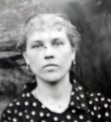
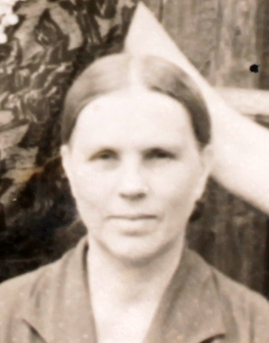

Продолжительность жизни: 77
Социальное происхождение: лишенец
Отец: Малютин Николай
Мать: Малютина Дарья
Муж: Герилович Анисим Иванович (1904 - 08.12.1987)
Дочь: Вершинская (Герилович) Клавдия Анисимовна (1931 - 08.2018)
Сын: Герилович Иван Анисимович (1936 - 2009)
Сын: Герилович Михаил Анисимович (1939 - 1990)
Дочь: Осецимская (Герилович) Людмила Анисимовна (1948)
Дочь: Барышникова (Герилович) Надежда Анисимовна (1952)
Дочь: Калиновская (Герилович) Галина Анисимовна (12.08.1956)
Родилась: 1910. Отец: Малютин Николай. Мать: Малютина Дарья.
Вышла замуж. Муж: Герилович Анисим Иванович.
Родилась дочь: Вершинская (Герилович) Клавдия Анисимовна, 1931. Отец: Герилович Анисим Иванович.
Родился сын: Герилович Иван Анисимович, 1936. Отец: Герилович Анисим Иванович.
Родился сын: Герилович Михаил Анисимович, 1939. Отец: Герилович Анисим Иванович.
Родилась дочь: Осецимская (Герилович) Людмила Анисимовна, 1948. Отец: Герилович Анисим Иванович.
Родилась дочь: Барышникова (Герилович) Надежда Анисимовна, 1952. Отец: Герилович Анисим Иванович.
Родилась дочь: Калиновская (Герилович) Галина Анисимовна, 12.08.1956. Отец: Герилович Анисим Иванович.
Умерла: 15.01.1987.
. . |